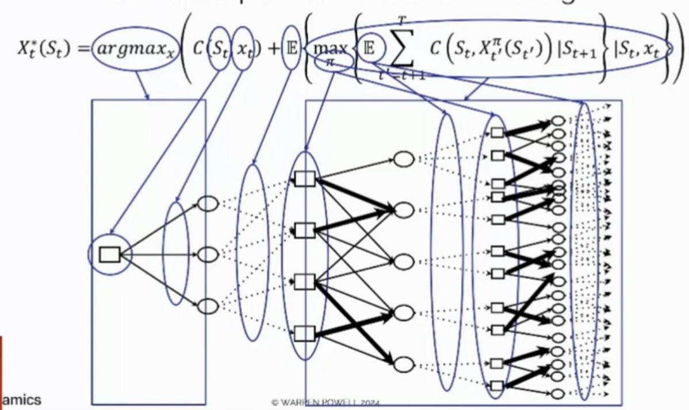
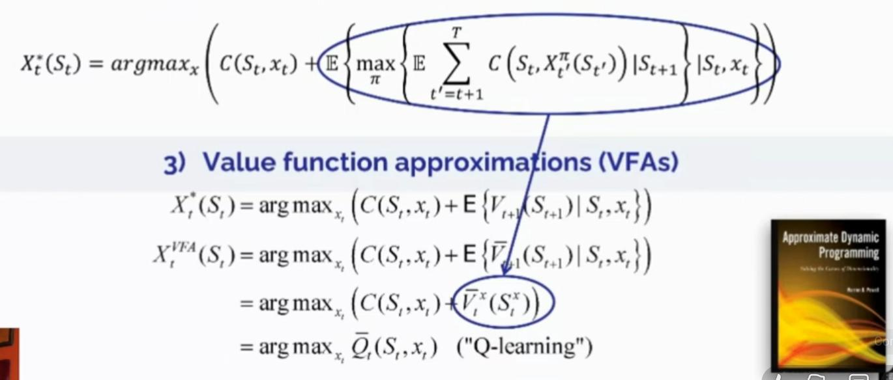
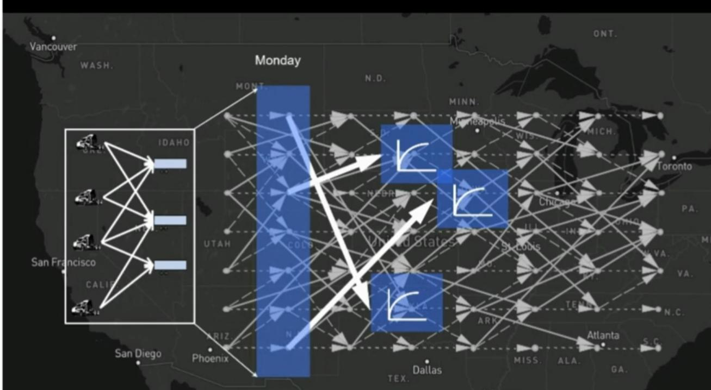
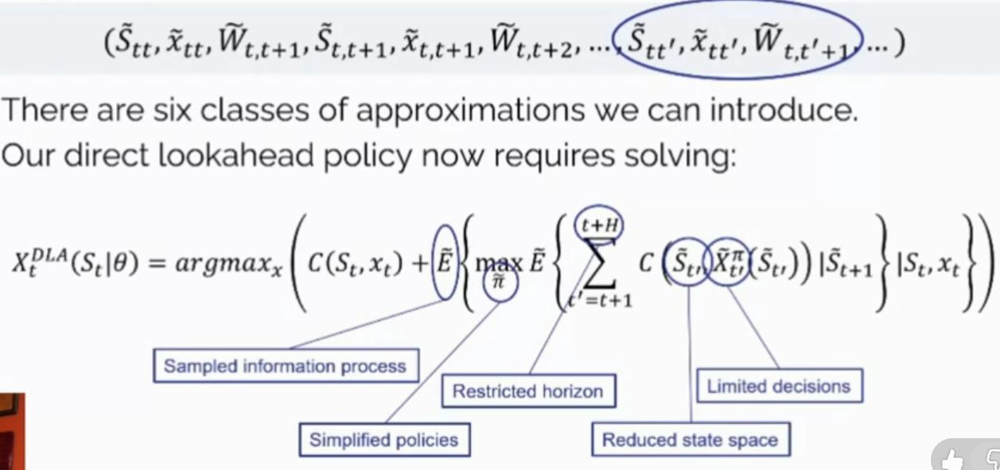

flowchart LR
A[Ambiguous Problem] --> B("Precise Definition <br> (Broken Down into Pieces)")
B --> C[Computer Software]
classDef nodeStyle fill:#1e293b,stroke:#38bdf8,stroke-width:2px,color:#f8fafc;
classDef highlight fill:#0f172a,stroke:#60a5fa,stroke-width:2.5px,color:#ffffff;
class A,C nodeStyle;
class B highlight;
Modeling sequential decision problems
Learning objectives
- Explain why classical modeling (linear programming, supervised ML) is insufficient for sequential decision problems.
- Define what a decision is and identify the three framing questions.
- Describe the five elements of the Universal Modeling Framework.
- Recognize the four classes of policies and give an example of each.
Solving real-life problems
To solve problems with computers we need to create a mathematical model

Solving real-life problems
To solve problems with computers we need to create a mathematical model

Problem with classical modeling framework
Linear program / Supervised machine learning
- Assumes that all data is known
- Doesn’t take into consideration that decisions are repeatedly taken over time
- Doesn’t take into consideration the flow of information
Problem with classical modeling framework
Linear program / Supervised machine learning
- Doesn’t anticipate external events that can affect the performance of a decision
- Doesn’t provide a way to represent risk
- Assumes a single decision-maker
Types of decisions
A decision is information we control that affects the system.
- Physical/financial
- Discrete actions
- Information acquisition/observation
- Information communication/sharing
- Choosing functions
- Setting parameters
- Estimation/identification
Framing the problem
Before building a model, answer three questions:
- What are the performance metrics?
- Costs, revenues, profits, health outcomes, risk, …
- What types of decisions are being made (and who makes them)?
- Physical/financial, discrete actions, information acquisition, …
- Single decision-maker or multiple agents?
- What are the uncertainties that affect performance?
- Initial beliefs (unknown parameters)
- Exogenous information arriving over time
Why we need prioritization
Even a simple inventory problem can be described with:
- over 20 performance metrics
- 30 types of decisions
- over 30 types of uncertainties
The full list is in Powell’s spreadsheet.
We cannot model all of this. We need to prioritize.
Notations for modeling sequential decision problems
- 15 communities
- 8 notational styles

Universal Modeling Framework
General View
- Represents any aspect of a controllable system.
- Takes into consideration that the system evolves over time with new information.

Using Continuous Time
- The information arrives continuously over time
- Functions, states, and decisions are measured at a point in time
- At time \(t\) any variable indexed by:
- \(t' \leq t\) is known
- \(t' > t\) is unknown

1. State Variables
\[S_{t} = (R_{t},I_{t},B_{t}) = \text{System state, where:}\]
- \(R_{t} =\) Resource/physical state (quantities). Inventories; location/status of truck/train/plane; Energy in storage, water, money.
- \(I_{t} =\) Information state (parameters/values, functions). Prices/weather/tariffs; Policies/forecasting methods/transition functions.
- \(B_{t} =\) Belief state (frequentist or Bayesian). Estimates of traffic delays; Belief about the status of equipment.
2. Decision \(x_t\)
Constraints: \(x_t \in \mathcal{X}(S_t)\)
We do not specify how to make a decision. Instead, we define the function (the “policy”) \(X^{\pi}(s)\), where \(\pi = (f, \theta)\) carries information about the type of function \(f\), and any tunable parameters \(\theta \in \Theta^f\).
2. Decision \(x_t\) (Types)
- Binary: \(x \in X = \{0,1\}\)
- Finite: \(x \in X = \{1, 2, \dots, M\}\)
- Continuous scalar: \(x \in X = [a, b]\)
- Continuous vector: \(x = (x_1, \dots, x_k), \quad x_k \in \mathbb{R}\)
- Discrete vector: \(x = (x_1, \dots, x_k), \quad x_k \in \mathbb{Z}\)
- Categorical: \(x = (a_1, \dots, a_l), \quad a_i \text{ is a category (e.g. red/green/blue)}\)
3. Exogenous Information
- We use
hatto identify variables.
\[W_{t + 1} = \text{New information that first becomes known at time } t+1\] \[= (\hat{R}_{t + 1},\hat{D}_{t + 1},\hat{p}_{t + 1},\hat{E}_{t + 1})\]
- \(\hat{R}_{t + 1} =\) Equipment failures, theft, exogenous deliveries
- \(\hat{D}_{t + 1} =\) New customer demands
- \(\hat{p}_{t + 1} =\) Changes in prices
- \(\hat{E}_{t + 1} =\) Information about the environment (temperature, …)
More general notation:
\[W_{t + 1,i}(S_t,x_t) \text{ information in class } i\in \mathcal{I}^{\inf} \text{ that may depend on state } S_{t} \text{ and/or decision } x_{t}\]
4. Transition function
It’s the function or group of functions that capture any of the following types of updates:
- Changes in physical resources such as adding inventory, moving people, or modifying equipment.
- Updates to information such as changes in prices and weather.
- Updates to our beliefs about uncertain quantities or parameters.
\[ S_{t+1} = S^M(S_t, x_t, W_{t+1}) \]
5. Objective functions
Maximizes total expected contributions over some horizon \(t = 0, \ldots, T\)
\[ \max_{\pi=(f,\theta)} F^\pi(S_0) = \mathbb{E} \left\{ \sum_{t=0}^T C_t(S_t, X_t^\pi(S_t|\theta))|S_0 \right\}, \quad (1.17) \]
where
\[ S_{t+1} = S^M(S_t, X_t^\pi(S_t), W_{t+1}). \quad (1.18) \]
5. Objective functions
Computing all possible outcomes of \(W_1, \dots, W_T\) is not possible.
Let \(\omega\) represent a single outcome of the sequence \(W_1(\omega), \dots, W_T(\omega)\) and we can have \(N\) possible outcomes of each sequence \(\omega^n\)
\[ \omega^n = (W_1^n, \dots, W_t^n, \dots, W_T^n) \]
\[ \max_{\pi=(f,\theta)} \bar{F}^\pi(S_0) = \frac{1}{N} \sum_{n=1}^N \sum_{t=0}^T C_t(S_t(\omega^n), X^\pi_t(S_t(\omega^n))) \]
Where:
\[ S_{t+1}(\omega) = S^M(S_t(\omega), X^\pi_t(S_t(\omega)), W_{t+1}(\omega)) \]
Modeling process
Process Overview

The Narrative (step 1)
flowchart TD
A["⚠️ Problem Definition<br/>Describe the problem in plain English"]
B["📉 Consequences of Inaction<br/>What happens if the problem remains unsolved?"]
D["🔍 Project Scope<br/>What will the solution address, and what is explicitly excluded?"]
E["💡 Solution Overview<br/>Describe the solution to be developed and its main deliverables"]
A --> B --> D --> E
classDef danger fill:#2c0f14,stroke:#f87171,stroke-width:2px,color:#fef2f2,width:260px,white-space:normal,text-align:center;
classDef warning fill:#2a1b0c,stroke:#fbbf24,stroke-width:2px,color:#fffbeb,width:260px,white-space:normal,text-align:center;
classDef info fill:#0c2136,stroke:#38bdf8,stroke-width:2px,color:#f0f9ff,width:260px,white-space:normal,text-align:center;
classDef success fill:#062319,stroke:#34d399,stroke-width:2px,color:#ecfdf5,width:260px,white-space:normal,text-align:center;
class A danger;
class B warning;
class D info;
class E success;
Framing the Problem
Roadmap: Four Questions, Four Tools
| Question | Step | Tool that answers it |
|---|---|---|
| Who decides, and where are the boundaries? | Scope | Context questions, SIPOC |
| What do we want to achieve? | 2A | KPI list → Metrics pyramid |
| What can we control? | 2B | Process maps → Decision impact matrix |
| What can we not control? | 2C | Uncertainty inventory → Uncertainty impact matrix |
| Do we have the evidence to model it? | Check | Relationship matrix |
Where do we start? Scope
Question: Who is deciding, and what is inside the problem?
- Who makes the decision, in what setting, with what history, and to achieve what?
- Define what enters the system, what leaves it, and who receives it.
Tool: SIPOC (Supplier, Input, Process, Output, Customer)
Best for defining system boundaries and external interfaces before choosing metrics.

What do we want to achieve? (step 2A)
Question: Which metrics define a “good” outcome?
- Identify relevant KPIs: costs, delivery times, customer satisfaction, emissions.
- Define units, baselines and targets for each one.
- Classify each metric:
- Objective: optimize it (minimize cost, maximize profit).
- Target: a numerical threshold to hit.
- Constraint: a non-negotiable limit (legal, budget, capacity).
From a List of KPIs to a Priority (step 2A)
Question: Which metrics matter most?
- Rank metrics in tiers; the top metric must be an objective.
- Tag each as Max, Min, Target, Floor or Ceiling.
Tool: Metrics pyramid
Tier 1 (one metric) → Tier 4. Forces a single top priority and exposes conflicts between metrics.
Output: prioritized metrics with units, baselines and targets.

What can we control? (step 2B)
Question: Who decides what, when, and with what information?
- Decision-makers: single manager, multiple agents, algorithms.
- Alternatives & constraints at each decision point.
- Timing & frequency: what information is available at that exact moment?
| If you need to know… | Use |
|---|---|
| Who hands off to whom, and who owns each decision | Cross-functional flowchart |
| The order of steps, operations and inspection points | Operations process chart |
| How things physically move, and over what distances | Flow / string diagram |
Pick the tool by the question, not by habit; one problem may need only one of them.
Which Decisions Really Matter? (step 2B)
Question: Which decisions have the most impact on my top metrics?
- List decisions, from general (“assign drivers to loads”) to specific (“assign driver X to load Y”).
- Check the 7 decision types to avoid blind spots (physical/financial, information acquisition, parameter setting, …).
- Score impact on each tiered metric: H → M → L → N.
- Rank rows by impact on the highest-tier metrics.
Tool: Decision impact matrix
Decisions × Metrics. Sub-decisions can be nested as the analysis gets deeper.

What can we not control? (step 2C)
Question: What could make performance differ from what we expect?
- Identify uncertain inputs and events: demand shifts, delays, equipment failures.
- Characterize each one:
- Variability & frequency: how often?
- Magnitude & dependencies: how large, and correlated with what?
- Extreme events: severe weather, port closures.
- Check the 12 categories of uncertainty (observational, exogenous, model, implementation, …) to avoid blind spots.
Exogenous Information: Types
- 1. Observational Uncertainty: GPS errors, inaccurate warehouse counts, hidden reefer container conditions.
- 2. Exogenous Uncertainty: Random customer order volumes/times, truck breakdowns, storm delays.
- 3. Prognostic Uncertainty: Errors in holiday demand forecasts, vessel arrivals, or fuel prices.
- 4. Inferential Uncertainty: Estimating price-demand elasticity or component remaining life.
- 5. Experimental Variability: Noise in test results (route design, warehouse layout simulation).
- 6. Model Uncertainty: Not knowing how customers or market competitors react to changes.
Exogenous Information: Types
- 7. Transitional Uncertainty: Inventory shrinkage, random dock loading times, traffic fluctuations.
- 8. Implementation Errors: Drivers ignoring routes, pickers pulling wrong items, equipment failures.
- 9. Communication Errors: Misheard verbal instructions, language barriers, missed schedule updates.
- 10. Algorithmic Instability: Vehicle routing solvers or ML models yielding different outputs on same data.
- 11. Goal Uncertainty: Disagreements between finance, sales, and sustainability departments.
- 12. Environmental Uncertainty: New tariffs, economic shifts, or changing emissions regulations.
Which Uncertainties Really Matter? (step 2C)
Question: Which uncertainties affect my metrics the most?
- Score each uncertainty against the same tiered metrics (H / M / L / N).
- Keep a structured inventory of the quantified risks.
Tool: Uncertainty impact matrix
Uncertainties × Metrics. Uncertainties are not nested: they live at the top level of the frame.
Do We Have the Evidence? Data Validation
Question: Can we connect data to each element of the model?
- Validate availability, quality, granularity and accuracy for metrics, decisions and uncertainties.
- Combine the two impact matrices into a single view:
\[\text{Metrics} \times \text{Decisions} \times \text{Uncertainties}\]
- Document data gaps and missing variables, and write testable hypotheses.

Pizza Restaurant
Inventory Problem
1. Narrative
- How many pounds of sausage to order from its food distributor?
- The decision is taken at the end of each day (time \(t\)) where
- Sausage’s cost is known
- Pizza’s price is known
- Demand is unknown
- If there is sausage left over, it can be held to the following day
- The order arrives the following morning
2. Core elements of the problem
- Metrics
\[ \max \text{profit} = \text{Sales of Sausage} - \text{Cost of Purchasing} \]
Decisions
- How much to order at the end of one day?
Sources of uncertainty
- The demand for sausage the next day.
3. Universal Modeling Framework
1. State Variables: \(S_0 = (R_0^{inv}, (p, c), (\bar{D}, \bar{\sigma}^D))\)
2. Decision \(x_t\): \(x_t = X^\pi(S_t)\)
3. Exogenous Information: \(W_{t+1} = \hat{D}_{t+1}\)
4. Transition function: \(R_{t+1}^{inv} = \max\{0, R_{t}^{inv} + x_t - \hat{D}_{t+1} \}\)
5. Objective functions:
\[ C(S_t, x_t, \hat{D}_{t+1}) = -cx_t + p \min \{ R_{t}^{inv} + x_t, \hat{D}_{t+1}\} \] \[ \max_{\pi = (f,\theta)} F^\pi (S_0) = \mathbb{E} \left\{ \sum_{t=0}^T C(S_t, X^\pi (S_t), \hat{D}_{t+1} ) | S_0 \right\} \]
4. Uncertainty model
Historical data if we were able to capture this lost demand.
Build a mathematical model to create sets of demands (\(\hat{D}_1^n, \dots, \hat{D}_T^n\)) that we can repeat \(N\) times.
\[ \hat{D}_{t+1} \sim N(\bar{D}, (\bar{\sigma}^D)^2) \]
5. Designing policies
Order-up-to policy
\[ X^\pi(S_t|\theta) = \begin{cases} \theta^{\text{max}} - R_t^{inv} & \text{if } R_t^{inv} < \theta^{\text{min}}, \\ 0 & \text{otherwise}, \end{cases} \]
Where \(\theta = (\theta^{min}, \theta^{max})\) need to be tuned.
6. Evaluating policies
- Generate \(K\) possible values \(\theta_1, \dots, \theta_K\)
- Simulate each one to find \(\bar{F}^\pi(\theta_k|S_0)\) for each \(k\)
- Pick the value of \(\theta_k\) that works the best.
\[ \overline{F}^{\pi}(\theta |S_{0}) = \frac{1}{N}\sum_{n = 1}^{N}\sum_{t = 0}^{T}C(S_{t},X^{\pi}(S_{t}|\theta),\hat{D}_{t + 1}^{n}). \]
Pizza Resturant (part 2)
Inventary Problem
1. Narrative
Original
- How many pounds of sausage to order from its food distributor?
- The decision is taken at the end of each day (time \(t\)) where
- Sausage’s cost is known
- Pizza’s price is known
- Demand is unknown
- If there is sausage left over, it can be held to the following day
- The order arrives the following morning
Updates
- The price we pay for sausage to vary from day to day.
- We have forecast for tomorrow’s demand
2. Core elements of the problem
- Metrics
\[ \max \text{profit} = \text{Sales of Sausage} - \text{Cost of Purchasing} \]
Decisions
- How much to order at the end of one day?
Sources of uncertainty
- The difference between the actual demand and the forecast
- The demand for sausage the next day
- The evolution of the forecasts from one day to the next
- The price we pay for the sausage
- The difference between the actual demand and the forecast
3. Universal Modeling Framework
1. State Variables:
- \(S_0 = (R_0, c_0, p, f_{0, 1}^D, \bar{\sigma}^D_0 ,\bar{\sigma}^f_0)\)
- \(S_t = (R_t^{inv}, c_t, f_{t, t+1}^D, \bar{\sigma}^D_t ,\bar{\sigma}^f_t)\)
2. Decision \(x_t\):
\[ x_t = X^\pi(S_t) \]
3. Exogenous Information:
\[ W_{t+1} = (\hat{c}_{t+1}, \varepsilon^f_{t+1}, \varepsilon^D_{t+1}) \] Where:
- \(\varepsilon^f_{t+1}\) is change in the forecast between time \(t\) and \(t+1\)
- \(\varepsilon^D_{t+1}\) is the ramdom deviation from the forecast to actual demand
3. Universal Modeling Framework
4. Transition function:
\[ S_{t+1} = S^M(S_t, x_t, W_{t+1}) \]
\[ R_{t+1}^{inv} = \max\{0, R_{t}^{inv} + x_t - \hat{D}_{t+1} \} \]
\[ \hat{D}_{t+1} = f^D_{t, t+1} + \varepsilon^D_{t+1} \]
\[ f_{t+1, t+2}^D = f_{t, t+1}^D + \varepsilon^f_{t+1} \]
\[ \begin{aligned} (\bar{\sigma}_{t+1}^D)^2 &= (1 - \alpha)(\bar{\sigma}_t^D)^2 + \alpha(f_{t,t+1}^D - \hat{D}_{t+1})^2 \\ (\bar{\sigma}_{t+1}^f)^2 &= (1 - \alpha)(\bar{\sigma}_t^f)^2 + \alpha(f_{t,t+1}^D - f_{t+1,t+2}^D)^2 \end{aligned} \]
\[ c_{t+1} = \hat{c}_{t+1} \]
3. Universal Modeling Framework
5. Objective functions:
\[ C(S_t, x_t, \hat{D}_{t+1}) = -c_tx_t + p \min \{ R_{t}^{inv} + x_t, \hat{D}_{t+1}\} \]
\[ \max_{\pi = (f,\theta)} F^\pi (S_0) = \mathbb{E} \left\{ \sum_{t=0}^T C(S_t, X^\pi (S_t), \hat{D}_{t+1} ) | S_0 \right\} \]
4. Uncertainty model
\[ \begin{aligned} \varepsilon_t^D &\sim N(0, (\bar{\sigma}_t^D)^2), \\ \varepsilon_t^f &\sim N(0, (\bar{\sigma}_t^f)^2) \end{aligned} \]
5. Designing policies
Let’s try to order enough to meet the expected demand for tomorrow rather than using an order-up-to policy.
\[ X^\pi(S_t \vert{} \theta) = \max\{0, f_{t, t+1}^D - R_t\} + \theta \]
6. Evaluating policies
- Generate \(K\) possible values \(\theta_1, \dots, \theta_K\)
- Simulate each one to find \(\bar{F}^\pi(\theta_k|S_0)\) for each \(k\)
- Pick the value of \(\theta_k\) that works the best.
\[ \overline{F}^{\pi}(\theta |S_{0}) = \frac{1}{N}\sum_{n = 1}^{N}\sum_{t = 0}^{T}C(S_{t},X^{\pi}(S_{t}|\theta),\hat{D}_{t + 1}^{n}). \]
Policies
Definitions and Criteria
Definition
They are functions that use the information in the state variable to make a decision.
Selecting criteria
Solution quality: Performance over some period of time.
- Average performance
- Worst case performance.
Computational requirements
- Average execution time
- Worst case execution times
Transparency: Capacity to trace a decision back to input data.
Flexibility/adaptability: We often need to adapt to complex situations.
Methodological complexity
Data requirements
Policy search
Search across methods (functions), simulating their performance to find the method that works best on average over time.
- Policy function approximations (PFAs): Functions that directly specify an action.
\[ X^\pi(S_t|\theta) = \begin{cases} \theta^{\text{max}} - R_t^{inv} & \text{if } R_t^{inv} < \theta^{\text{min}}, \\ 0 & \text{otherwise}, \end{cases} \]
\[ X^\pi(S_t \vert{} \theta) = \max\{0, f_{t, t+1}^D - R_t\} + \theta \]
Policy search
- Cost function approximations (CFAs): Policies that involve solving an optimization problem with parameters introduced to help make the policy work better over time.
- Find the shortest path to a destination, but add a buffer \(\theta\) (e.g., 15 minutes) to make sure you arrive on time.
- Schedule nurses for \(\theta = 32\) hours per week, which allows for unforeseen emergencies.
- Upper confidence bounding:
\[ X^{UCB}(S^n \mid \theta^{UCB}) = \arg\max_x \left( \bar{\mu}_x^n + \theta^{UCB} \sqrt{\frac{\log n}{N_x^n}} \right) \]
- Interval estimation:
\[ X^{IE}(S^n \mid \theta^{IE}) = \arg\max_x \left( \bar{\mu}_x^n + \theta^{IE} \bar{\sigma}_x^n \right) \]
Policy search
- Thompson sampling:
\[ X^{TS}(S^n \mid \theta^{TS}) = \arg\max_x \hat{\mu}_x^n, \quad \hat{\mu}_x^n \sim N(\bar{\mu}_x^n, \theta^{TS} \bar{\sigma}_x^{2,n}) \]
- Parametric:
\[ X_t^\pi(S_t \mid \theta) = \arg\max_{x_t \in X_t} \sum_{p \in P} c_p x_{tp} \]
subject to
\[\begin{aligned} \sum_{p \in P} x_{tp} &\ge \theta^{\text{reserve}} D_t && (\text{Reserve}) \\ x_{tp} &\le u_p \\ x_{tp} &\ge \theta^{\text{buffer}} && (\text{Buffer stock}) \end{aligned}\]
Lookahead policies
Determines the best current action by evaluating immediate consequences and future impact.

Lookahead policies
- Value function approximations (VFAs): Creates policies by optimizing the first period contribution (or cost) plus an approximation of the value of the state that a decision takes us to.

Lookahead policies
- Value function approximations (VFAs): Creates policies by optimizing the first period contribution (or cost) plus an approximation of the value of the state that a decision takes us to.

Lookahead policies
- Direct lookaheads (DLAs): It explicitly optimize over decisions we may make in the future.

Exercises
1.1
1.1 What are the five elements of the mathematical model of a sequential decision problem?
The five elements of the universal modeling framework are:
- State variables \(S_t\): all information needed at time \(t\) to make a decision, compute performance, and simulate forward.
- Decision variables \(x_t\): the controllable action, chosen by a policy \(X^\pi(S_t)\).
- Exogenous information \(W_{t+1}\): new information that arrives after decision \(x_t\) and is outside our control.
- Transition function \(S_{t+1}=S^M(S_t,x_t,W_{t+1})\): how the state evolves.
- Objective function: typically \[ \max_{\pi=(f,\theta)} \mathbb{E}\left\{\sum_{t=0}^T C(S_t,X^\pi(S_t|\theta))\mid S_0\right\}. \]
1.2
1.2 What is the difference between the variables in the initial state \(S_0\) and those in the dynamic state \(S_t\) for \(t>0\)?
\(S_0\) contains:
- deterministic parameters that never change;
- initial values of quantities or parameters that may change over time;
- initial beliefs or probability distributions about uncertain quantities.
\(S_t\) for \(t>0\) contains only the information that evolves over time and is needed from time \(t\) onward. Static information remains in \(S_0\) and is used as needed.
1.2 (cont.)
For the simple inventory problem: \[ S_0=(R_0^{inv},(p,c),(\bar D,\bar\sigma^D)), \qquad S_t=R_t^{inv}. \]
For the more complex inventory problem: \[ S_0=(R_0,c_0,p,f_{0,1}^D,\bar\sigma_0^D,\bar\sigma_0^f), \] \[ S_t=(R_t^{inv},c_t,f_{t,t+1}^D,\bar\sigma_t^D,\bar\sigma_t^f). \]
1.3
1.3 What is the difference between a decision and the exogenous information?
A decision is an endogenously controllable information class: something we choose through a policy \(X^\pi(S_t)\) and that affects the system.
Exogenous information \(W_{t+1}\) is new information that first becomes known after decision \(x_t\), between \(t\) and \(t+1\). It is outside our control and is uncertain when the decision is made. It may depend on the state and/or the decision, written as \(W_{t+1}(S_t,x_t)\).
1.4
1.4 What are the two major categories of policies, and how are they different?
The two major categories are:
- Policy search: search over methods/functions and tunable parameters by simulating their performance; choose the method that works best on average over time. This includes policy function approximations (PFAs) and cost function approximations (CFAs).
- Lookahead policies: choose the current decision by optimizing current contribution plus an approximation of future consequences. This includes value function approximations (VFAs) and direct lookahead approximations (DLAs).
The key difference: policy search searches over the policy function/parameters directly, while lookahead policies use a model or value approximation to evaluate the future impact of the current decision.
1.5
1.5 Compare the state variables for the simple inventory problem in §1.5.1 to the more complicated inventory problem in §1.5.2.
Simple inventory problem: \[ S_0=(R_0^{inv},(p,c),(\bar D,\bar\sigma^D)), \qquad S_t=R_t^{inv}. \]
- Only inventory is dynamic.
- Price and cost are fixed.
- Demand is modeled with known normal parameters.
- There is no forecast updating and no belief updating.
1.5 (cont.)
More complicated inventory problem: \[ S_0=(R_0,c_0,p,f_{0,1}^D,\bar\sigma_0^D,\bar\sigma_0^f), \] \[ S_t=(R_t^{inv},c_t,f_{t,t+1}^D,\bar\sigma_t^D,\bar\sigma_t^f). \]
It adds:
- time-varying purchase cost \(c_t\);
- a demand forecast \(f_{t,t+1}^D\);
- belief-state estimates of demand and forecast uncertainty \(\bar\sigma_t^D,\bar\sigma_t^f\);
- transition equations that update forecasts and uncertainty estimates over time.
So the complex version has physical state, information state, and belief state, while the simple version has essentially only the physical inventory state.
1.6
1.6 Compare the policies for the two inventory problems in §1.5.1 in terms of how they would handle time-dependent behavior. Comment on the value of making \(\theta\) time-dependent.
Simple problem policy: order-up-to policy \[ X^\pi(S_t|\theta)= \begin{cases} \theta^{\max}-R_t^{inv}, & R_t^{inv}<\theta^{\min},\\ 0, & \text{otherwise}. \end{cases} \]
Complex problem policy: order enough to meet the forecast plus a buffer \[ X^\pi(S_t|\theta)=\max\{0,f_{t,t+1}^D-R_t^{inv}\}+\theta. \]
1.6 (cont.)
If demand is much higher on weekends than on weekdays, a single \(\theta\) (or a single \(\theta^{\min},\theta^{\max}\) pair) forces the same policy across all days. That tends to overstock on low-demand days and understock on high-demand days.
Making \(\theta\) time-dependent—e.g. \(\theta_d\) by day of week, or \(\theta^{\min}_d,\theta^{\max}_d\)—allows different order-up-to levels or buffers for different days. This can improve service levels and reduce holding/stockout costs. The cost is more parameters to tune and a greater data requirement; one should avoid overfitting and can share parameters across similar days, such as weekday vs. weekend.
1.7
1.7 Contrast how you might go about tuning the parameter \(\theta\) for the inventory problems in §1.5.1: (a) in a simulator; (b) in the field.
Simulator:
- Pros: fast, cheap, reproducible, can test many \(\theta\) values, can generate many sample paths, statistically reliable estimates, low operational risk.
- Cons: requires a correct uncertainty model and transition model; may miss real-world effects, correlations, implementation errors, and state/decision-dependent behavior; results are only as good as the simulator.
1.7 (cont.)
Field:
- Pros: uses real data and real behavior; captures effects that are hard to model; no simulator-model misspecification.
- Cons: slow—one day of real time produces one day of data; expensive and potentially risky; limited number of experiments; harder to isolate effects due to confounding; ethical or operational constraints may prevent testing many values.
In practice, simulation is usually used first to screen many \(\theta\) values, and field testing is used to validate and fine-tune the best candidates.